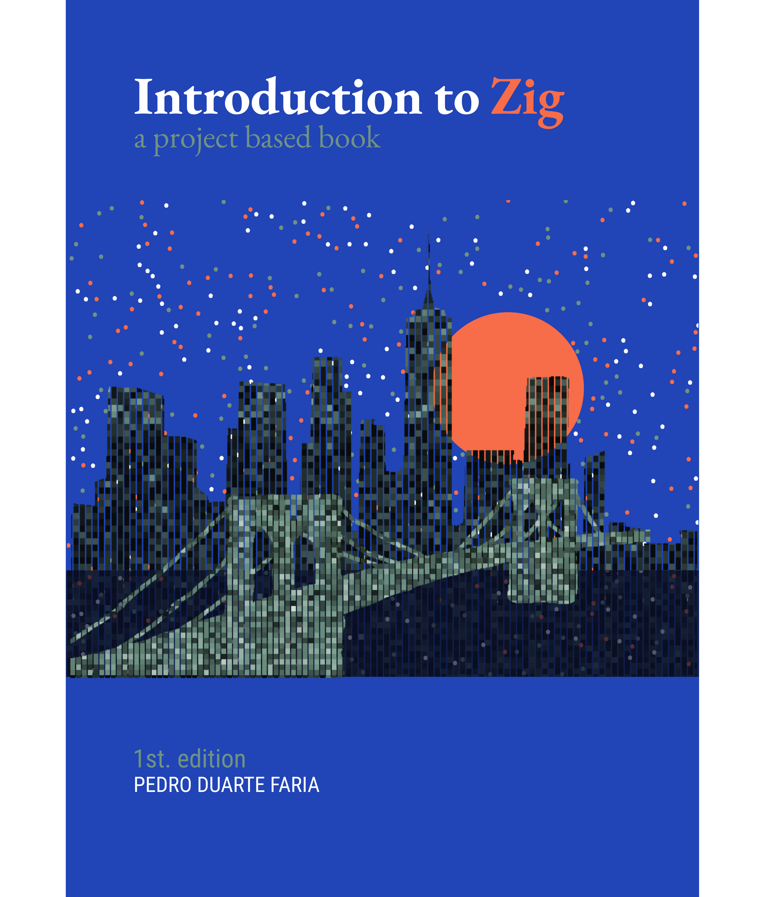

Introduction to Zig: a project-based book
Welcome

Welcome! This is the initial page for the “Open Access” HTML version of the book “Introduction to Zig: a project-based book”, written by Pedro Duarte Faria. This is an open book that provides an introduction to the Zig programming language, which is a new general-purpose, and low-level language for building robust and optimal software.
About this book
This an open book, meaning that, it is open-source, and it will always be open for anyone that wants to read it. However, this book is still under construction 🚧 and active development, so, it’s contents might change drastically in the near future.
Also, this is a project-based book, which means that we learn how to use the Zig programming language through small and simple projects, in a similar style to the famous “Python Crash Course” book from Eric Matthes.
Official book’s repository: https://github.com/pedropark99/zig-book
License
Copyright © 2024 Pedro Duarte Faria. This book is licensed by the CC-BY 4.0 Creative Commons Attribution 4.0 International Public License4.

Book compilation metadata
This book was compiled using the following versions of Zig and Quarto:
System version: Linux, 6.8.0-41-generic, NA, x86_64.
Zig version: 0.14.0-dev.1166+bb7050106.
Quarto version: 1.5.56.
Book citation
You can use the following BibTex entry to cite this book:
@book{pedro2024,
author = {Pedro Duarte Faria},
title = {Introduction to Zig},
subtitle = {a project-based book},
month = {December},
edition = {1},
year = {2024},
address = {Belo Horizonte},
url = {https://pedropark99.github.io/zig-book/}
}